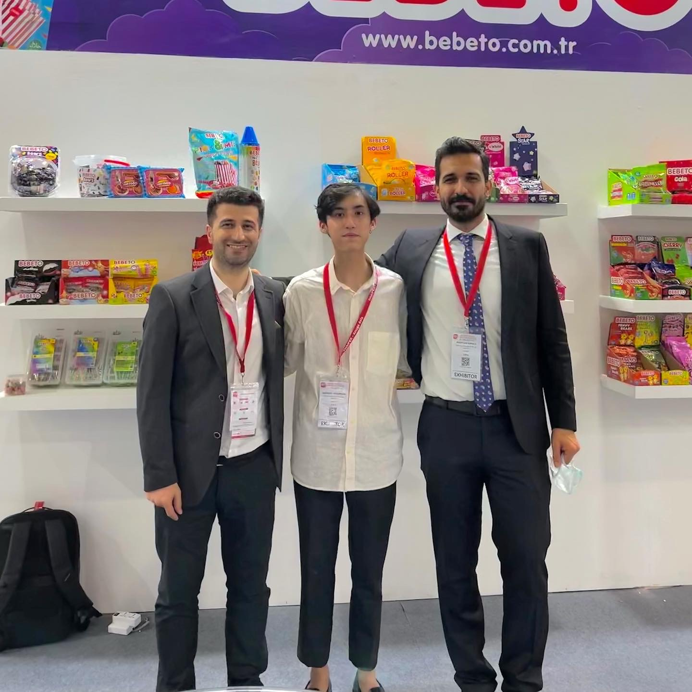

Kervan Gida Sanayi ve Ticaret A.S | 25 May 2020 - 30 May 2020

Worked with Kervan Gida, a Turkish food company, during the 2020 ThaiFEX international trade exhibition for 6 days, Regional Sales Manager. Communicated with multiple international clients and distributors from regions including the Middle East, India, Europe, Asia, and America.
← Back